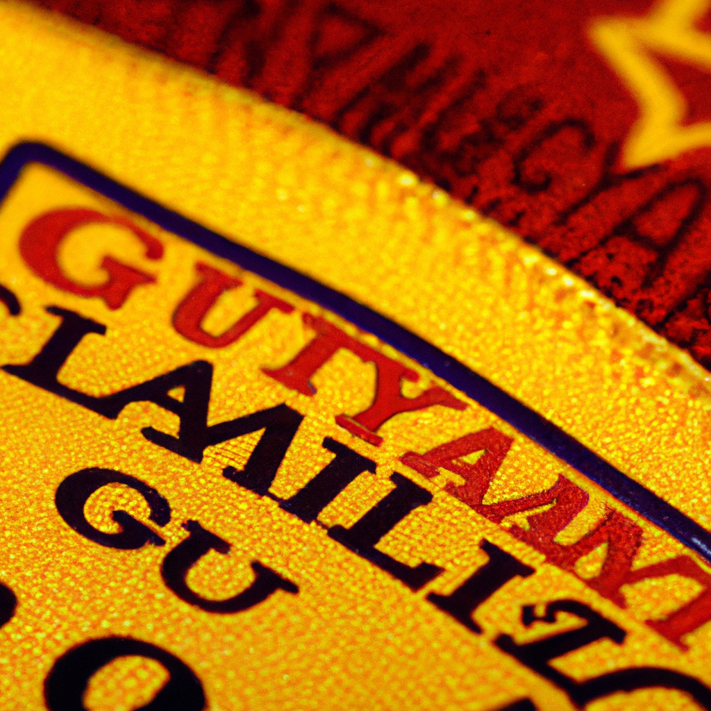

Galatasaray3
Title: Galatasaray's Historic UEFA Run in 2000
Tags: Galatasaray, UEFA, 2000, Soccer, Football
It was in 2000 when Galatasaray, the Turkish football club, created history and made its mark in the European football scene. It was the first Turkish club to reach the quarterfinals of the UEFA Champions League, the most prestigious club competition in the world.
The year 2000 was a special one for Galatasaray, as they had already won the Turkish Super Lig in 2000 and were looking to make their mark in Europe. The team was managed by Fatih Terim and captained by the legendary Gheorghe Hagi. The team had a combination of experienced veterans and promising youngsters, such as Hakan Şükür, Bülent Korkmaz, and Claudio Taffarel.
Galatasaray's journey in the UEFA Champions League began with a tough group stage in which they had to face Arsenal, Barcelona, and Fiorentina. Despite the tough competition, the Turkish side managed to top the group and qualify for the quarterfinals.
In the quarterfinals, Galatasaray faced the reigning champions Real Madrid. The first leg of the quarterfinals saw an impressive performance from the Turkish side as they managed to hold on to a 1-1 draw at the Santiago Bernabéu. The second leg saw Galatasaray take the lead through a goal from Jardel but Madrid equalized late in the match. The match went to extra time and a late goal from Gheorghe Hagi secured a 3-2 aggregate victory for Galatasaray.
Galatasaray's historic run in the UEFA Champions League ended in the semifinals as they were defeated by Valencia, who eventually went on to win the title. Nevertheless, Galatasaray's run in 2000 was a remarkable one and it showed that Turkish teams could compete with the best in Europe.
Galatasaray's UEFA run in 2000 will never be forgotten and will always be remembered as one of the greatest achievements in Turkish football history.